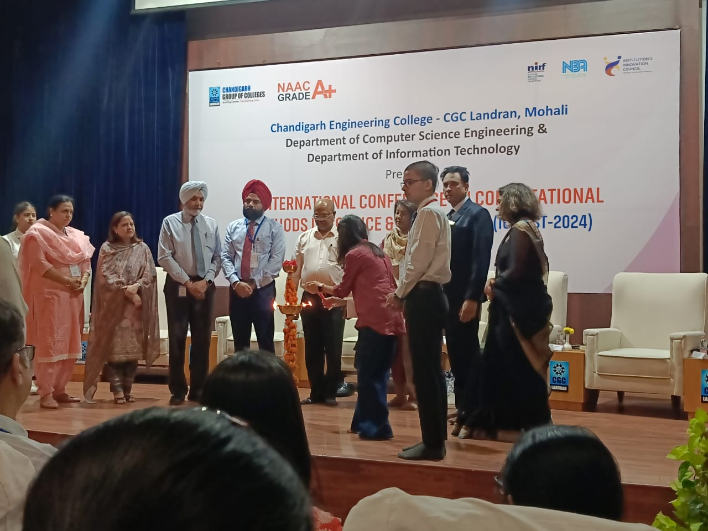
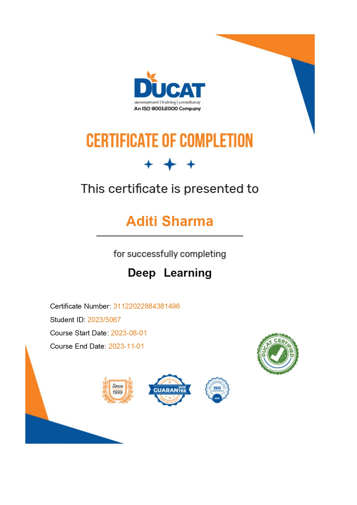
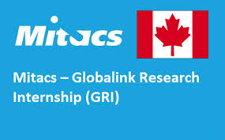

I have presented my paper in Conference on 2nd May 2024 which was on the comparative study of different reommender systems uswed in different domain. After that I've participated In RECSYS Conference of Italy.
Emphasizing my dedication to academic rigor and keen interest in pioneering solutions within recommender systems.I have studied different approaches of recommender system and integraed implicit ways to existing recommender system and utilized my knowledge in different projects like log based,
employee retention and emotion based recommendations.


Successfully executed projects such as Image Classification using CNN and Credit
Card Fraud Detection with MLP. These undertakings underscore my ability to implement complex
models and solve real-world challenges adeptly.

I got selected for the globlink research program in my second year of college. I was doing well academically(9 pointers) and covered the basics of machin learning technology in 2nd year. I was interviewed by peodro

I have had the incredible opportunity to work with a diverse and talented group of students, fostering a community of innovation, collaboration, and learning.
Have conducted hackathons, webinars, alumni-meet, Gdsc events to Develop technical and non technical skills in the community of over 500 students.
Got a rank of 2210.
My GATE journey was more than an exam; it was a journey of self-discovery and growth. Despite setbacks, I emerged stronger and more determined to excel in my field. In seeking validation externally, I realized the importance of internal confidence.